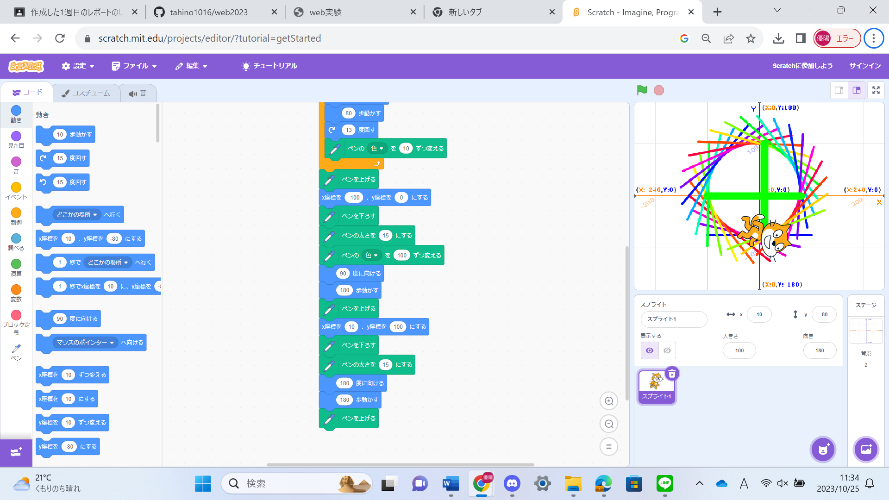
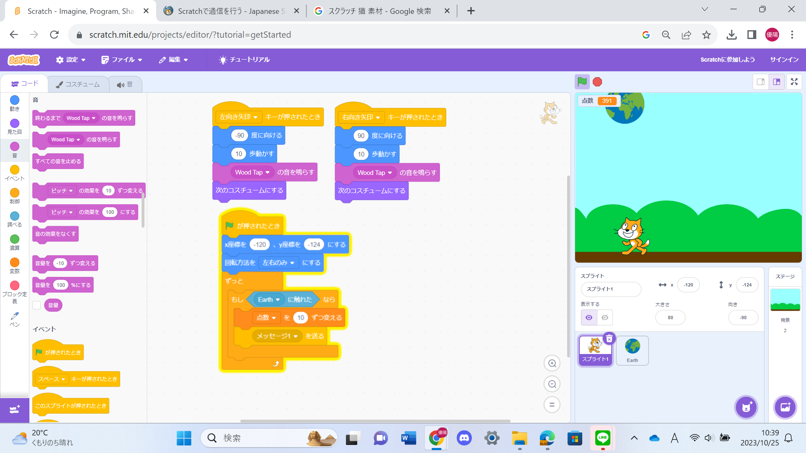

1-1 サイエンスアート

1.内容
スクラッチを使って線を書くプログラムを使って自分でラインアートを作る。
スクラッチの中の猫が通った所に線が出てくるようにプログラムし、猫が線の色を変えながら円を描くように動くようにする。
私は丸の形から連想された大乱闘スマッシュブラザーズに登場するスマッシュボールを意識してラインアートを作りました。
2.感想
初めてスクラッチを使った小学生の時は猫を動かすのにもとても難しいと感じ、苦手意識を持っていたが今回の授業中に触っているととても簡単で驚いた。しかし、自分が思っているように動かすには遠回りして色々なブロックを組み合わせないといけないので少し時間がかかってしまった。
この線をもっと動かすことができたら、キャラクターなどの細かいものも作成することができそうだなと思った。
1-2 ゲーム

1.内容
スクラッチの猫が空から落ちてくる地球をキャッチするゲームを作成した。
１、猫 左右の方向に移動を制限してスペースキーを押すことによって移動するようにプログラムを作成した。
２、地球 画面上部のランダムな場所から落ちれ来るようにして、猫に触れたら消えるようにプログラムを作成した。
３、画面 猫に触れて消えたリンゴが１つにつき１０点加点される点数を表示するようにプログラムを作成した。
2.感想
向きを制限するブロックやボタンで反応するブロックなどがあり、ゲームを作成するときに使えそうだなと思った。今回の授業の単純な構造のゲームに数十個のプログラムが必要になっていて、本格的なゲームを作成するにはどのくらいのプログラムが必要になるのか興味を持った